হাইব্রিড আর্কিটেকচার: দুটি দুনিয়র শ্রেষ্ট স্যুপাবেস ও স্প্রিং বুটের সাথে
প্রকাশিত: 14 January 2026
সুপাবেসের সহজতা এবং স্প্রিং বুটের ক্ষমতা মধ্যে থেকে বেছে নেওয়ার পরিবর্তে, কেন না উভয়টি একত্রিত করবেন? প্রতিটি প্রযুক্তির শ্রেষ্ঠ অংশ ব্যবহার করে একটি হাইব্রিড আর্কিটেক্টোর আবিষ্কার করুন।
- আধুনিক স্থাপত্যের মিথ্যা দ্বন্দ্ব
- আর্কিটেকটুরাল দৃষ্টিভঙ্গি
- ডিজাইনের নীতি
- প্রবাহের অর্কেস্ট্রেশন
- সিদ্ধান্ত ম্যাট্রিক্স
- প্রকল্পের ধরন অনুযায়ী আর্কিটেকচারের উদাহরণ
- প্রগ্রেসিভ মাইগ্রেশন কৌশল
- খরচ এবং অপারেশনাল বিবেচনা
- উপসংহার: সম্পূর্ণ ভারসাম্য
- আগে বাড়তে
- উন্নয়নের দৃষ্টিভঙ্গি
- আর্কিটেকচারাল সাক্ষ্য
- সংক্ষিপ্তসার : একটি আধুনিক স্থাপত্য প্রেক্ষাপট
- শেষ নিষ্কর্ষ
আধুনিক স্থাপত্যের মিথ্যা দ্বন্দ্ব
একটি স্ট্যাটিক ফ্রন্টএন্ড দিয়ে একটি আধুনিক অ্যাপ্লিকেশন তৈরি করার সময়, আমরা প্রায়ই দুর্বার বাইনারী নির্বাচনের মুখোমুখি হয়ে পাই:
-
ব্যাকএন্ড-এ-সার্ভিস সমাধানেই সবকিছু বাজে লাগানো(Supabase, Firebase) - সহজ কিন্তু সীমাবদ্ধ
-
একটি সম্পূর্ণ ব্যাকএন্ড তৈরি করা(Spring Boot, Node.js) - শক্তিশালী কিন্তু জটিল
এই বেছে নেওয়া একটি মিথ্যা দ্বন্দ্ব। হাইব্রিড আর্কিটেকচার একটি তৃতীয় পথ প্রস্তাব করে: প্রতিটি প্রযুক্তি ব্যবহার করুন যেখানে সে উত্তমভাবে কাজ করে
আর্কিটেকটুরাল দৃষ্টিভঙ্গি
ঐতিহ্যবাহী স্থাপত্য : একশিলা
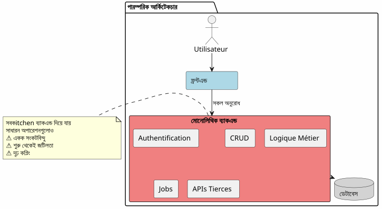
এই পদ্ধতিতে, সবচেয়ে সহজ অপারেশনও (একটি নিবন্ধ পড়া, একটি মন্তব্য তৈরি করা) আপনার ব্যাকএন্ড দিয়ে বাধ্য হয়ে যায়। আপনি প্রথম দিন থেকেই জটিলতার খরচ প্রদান করেন।
BaaS আর্কিটেকচার: সব প্রতিনিধি
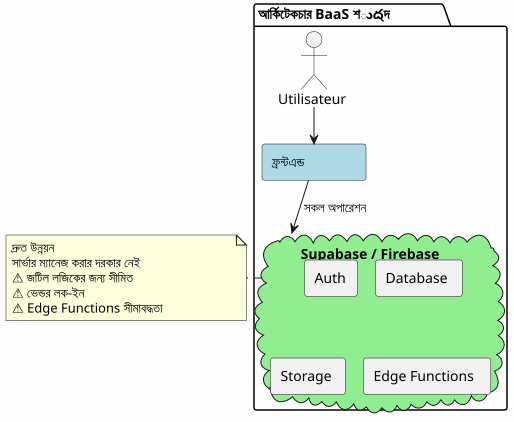
বিপরীতভাবে, ব্যাস (BaaS)-এ সবকিছু委mission করা প্রথমে আকর্ষণীয় মনে হতে পারে কিন্তু ব্যবসা লজিক জটিল হওয়ার সাথে সাথে তা দ্রুত সীমাবদ্ধতা দেখায়।
হাইব্রিড আর্কিটেকচার : দায়িত্বের বিভাজন
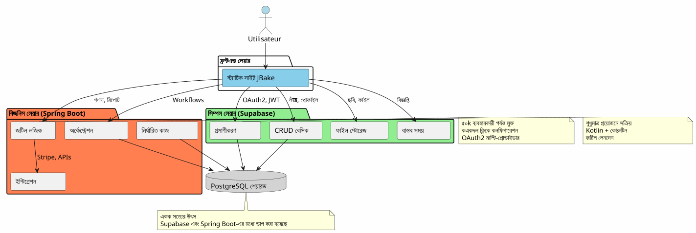
হাইব্রিড আর্কিটেকচার জটিলতা এবং অপারেশন들의 প্রকৃতির ভিত্তিতে দায়িত্বগুলোকে স্পষ্টভাবে পৃথক করে।
ডিজাইনের নীতি
সिद्धান্ত ১ : সহজে শুরু করুন, বুদ্ধিমতাপূর্ণভাবে উন্নয়ন করুন
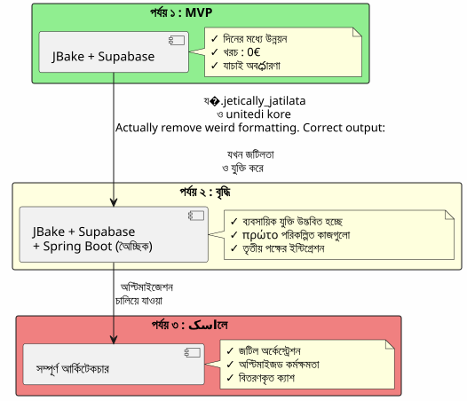
যদি আপনার Spring Boot দরকার না হয়, তবে সেটি তৈরি করবেন না।Supabase দিয়ে শুরু করুন, জটিলতা প্রয়োজন হলে Spring Boot যোগ করুন।
প্রিনসিপ ২ : অপারেশনের প্রকৃতির ভিত্তি করে পৃথকীকরণ
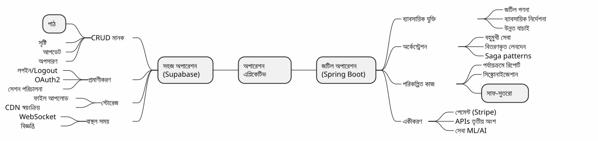
নীতি ৩: শুধুমাত্র একটি সত্যের উৎস
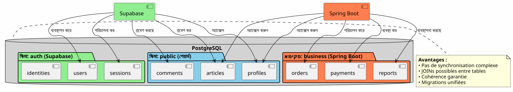
একই PostgreSQL ইনস্ট্যান্স শেয়ার করে, Supabase এবং Spring Boot একই ডেটাতে কাজ করে জটিল সিঙ্ক্রোনাইজেশন ছাড়া।
প্রবাহের অর্কেস্ট্রেশন
প্রবাহ ১ : কেন্দ্রীয় প্রমাণীকরণ
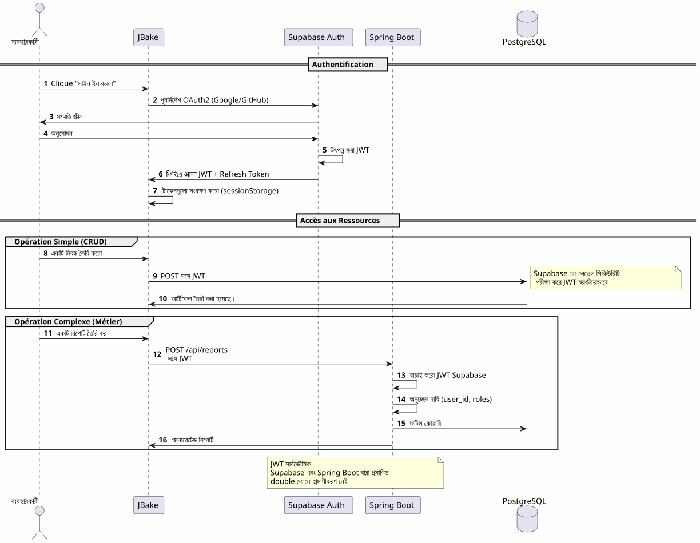
মুখ্য বিন্দুএকটি প্রমাণীকরণ প্রক্রিয়া, یک JWT, সর্বোদয় ব্যবহারযোগ্য।
ফ্ল্যাক্স ২ : জটিল ব্যবসা প্রক্রিয়ার আয়ার্কফ্লো
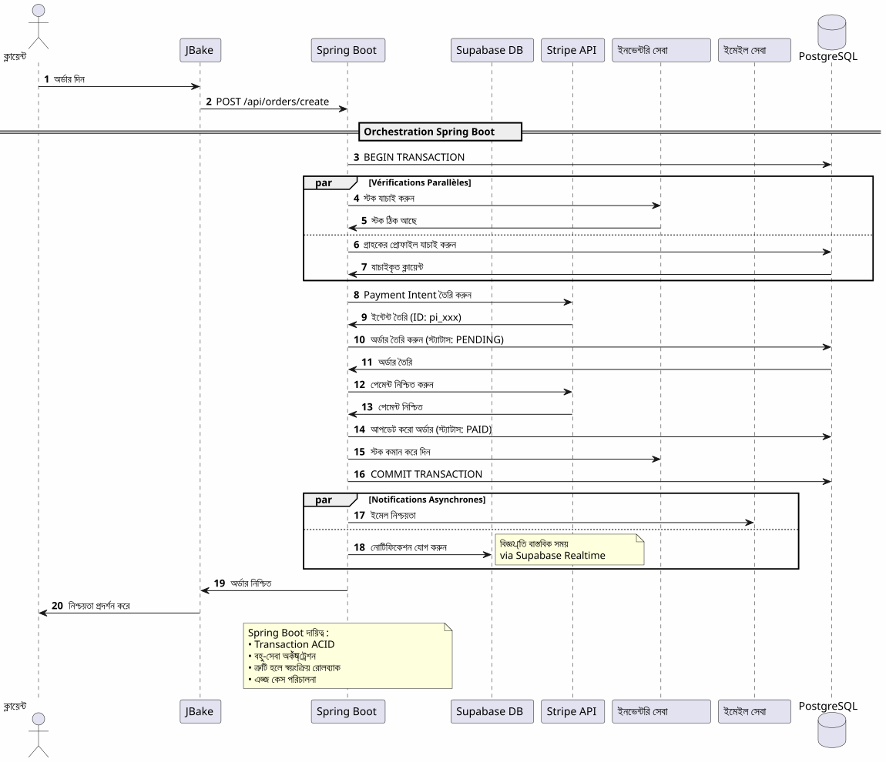
Spring Boot কি সরবরাহ করেবিশ্বাসযোগ্য অর্কেস্ট্রেশন জটিল প্রক্রিয়া, একাধিক সিস্টেম জড়িত, ট্রান্জ্যাকশন গ্যারান্টি সহ।
প্রবাহ ৩ : পরিকল্পিত কাজ এবং সিঙ্করোনাইজেশন
Failed to generate image: PlantUML preprocessing failed: [From <input> (line 11) ] @startuml skinparam backgroundColor #FEFEFE participant "Scheduler\n(Spring Boot)" as scheduler participant "রিপোর্ট সেবা" as report participant "PostgreSQL" as db participant "বাহ্যিক API" as api participant "ইমেইল সেবা" as email participant "Supabase স্টোরেজ" as storage == Job Quotidien : 2h00 ^^^^^ Syntax Error? (Assumed diagram type: sequence) @startuml skinparam backgroundColor #FEFEFE participant "Scheduler\n(Spring Boot)" as scheduler participant "রিপোর্ট সেবা" as report participant "PostgreSQL" as db participant "বাহ্যিক API" as api participant "ইমেইল সেবা" as email participant "Supabase স্টোরেজ" as storage == Job Quotidien : 2h00 activate scheduler scheduler -> report : রিপোর্ট জেনারেট ট্রিগার activate report report -> db : আনুন ডেটা\nের শেষ ২৪ঘণ্টা db -> report : ডেটাসেট report -> report : গণনা ও সমষ্টি report -> report : জেনারেশন PDF report -> storage : আপলোড PDF storage -> report : URL publique report -> email : পাঠাও অ্যাডমিনদের\nসাথে লিঙ্ক PDF deactivate report == Job Hebdomadaire : রবিবার 3h00 == scheduler -> report : বাহ্যিক সমন্বয় activate report report -> api : বাহ্যিক ডেটা আনুন api -> report : নতুন ডেটা report -> db : টেবিল আপডেট report -> db : অপ্রয়োজনীয় ডেটা পরিষ্কার deactivate report == Job Mensuel : ১ম মাসের =_== scheduler -> report : বিলিং activate report report -> db : সক্রিয় ক্লায়েন্টদের তালিকা report -> report : পরিমাণের গণনা report -> api : বিল জেনারেশন (Stripe) report -> email : বিল পাঠানো deactivate report deactivate scheduler note right of scheduler শুধুমাত্র Supabase দিয়ে তা করা সম্ভব নেই Edge Functions লম্বা এবং পুনরাবৃত্তি কাজের জন্য উপযোগী নয় end note @enduml
Spring Boot যা আনে: নির্ভরযোগ্য পরিকল্পিত কাজ, অবস্থা</tool_call>পনা সহ, স্বয়ংক্রিয়া রিট্রাই এবং গ্যারান্টেট এক্সিকিউশন।
সিদ্ধান্ত ম্যাট্রিক্স
Supabase কখন ব্যবহার করা উচিত ?
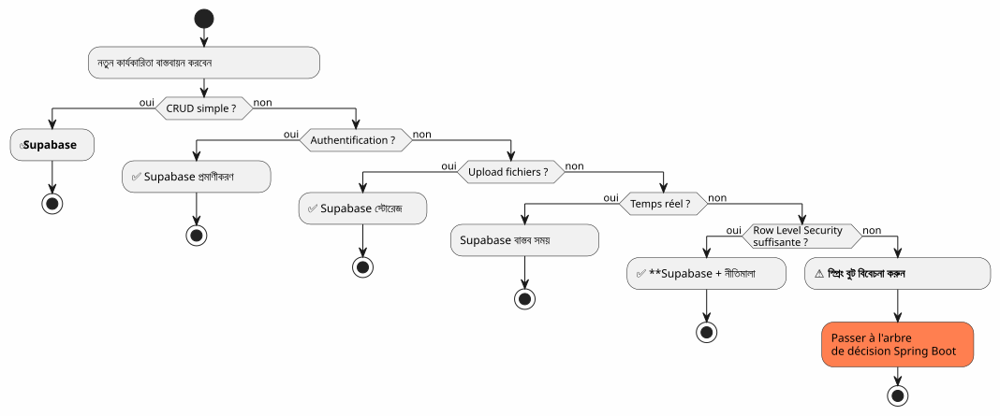
Spring Boot কখন ব্যবহার করবেন?
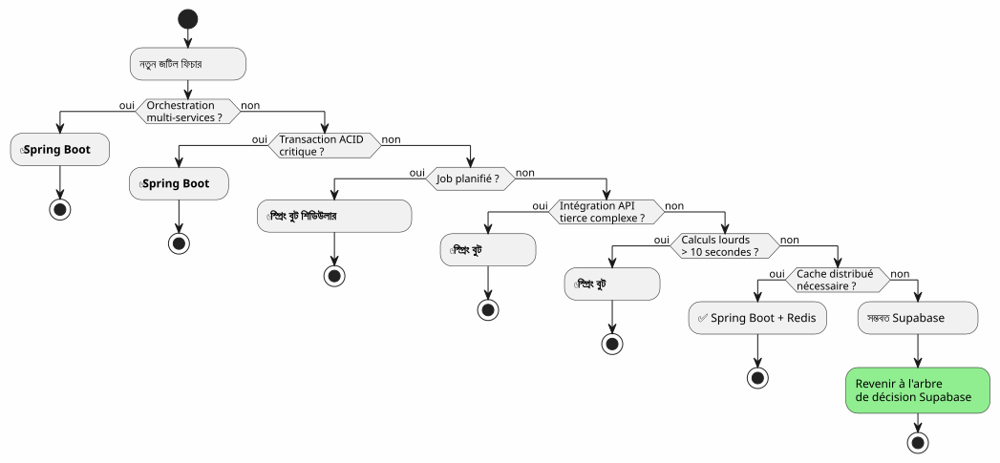
প্রকল্পের ধরন অনুযায়ী আর্কিটেকচারের উদাহরণ
ব্লগ / পোর্টফোলიო
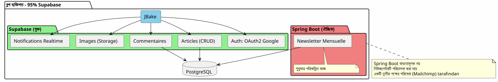
বিচারের সিদ্ধান্ত: ১০০% Supabase যথেষ্ট পর্যাপ্ত।
SaaS অ্যাপ্লিকেশন
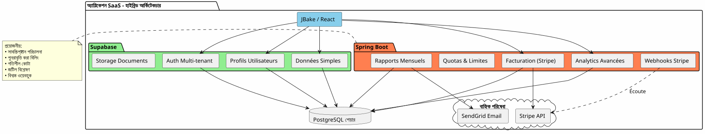
ফয়সালা: হাইব্রিড আর্কিটেকচার প্রয়োজনীয়। Supabase জরূরি কাজের জন্য, Spring Boot গুরুত্বপূর্ণ অংশ (পেমেন্ট, বিলিং) জন্য।
ই-কমার্স
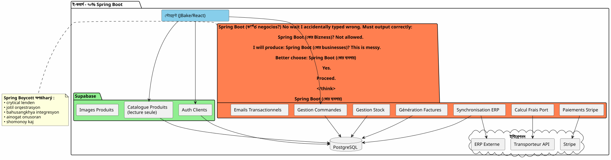
বিচারের সিদ্ধান্তSpring Boot অপরিহার্য। Supabase শুধুমাত্র প্রমাণীকরণ এবং ক্যাটালগের জন্য।
প্রগ্রেসিভ মাইগ্রেশন কৌশল
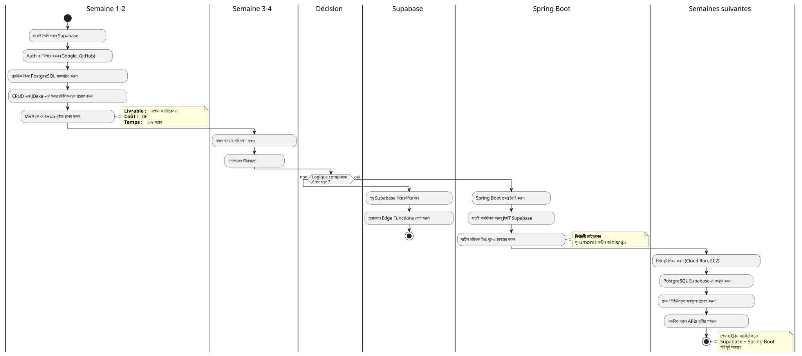
খরচ এবং অপারেশনাল বিবেচনা
খরচের গঠন
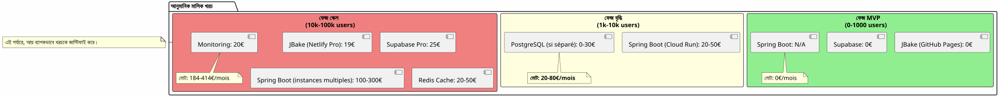
অপারেশনাল দায়িত্ব
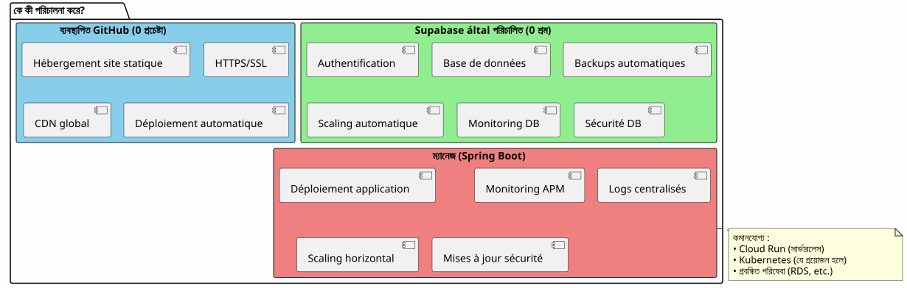
উপসংহার: সম্পূর্ণ ভারসাম্য
Supabase + Spring Boot হাইব্রিড আর্কিটেকচার একটি সমন্বয় নয়, এটি একটিসিনার্জি.
যে নीतিগুলোকে মনে রাখা উচিত
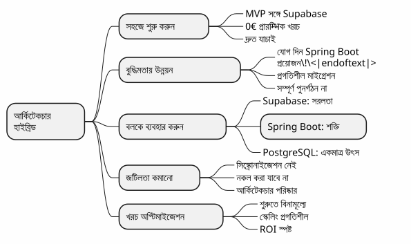
কanneer এই আর্কিটেকচার বেছে নেওয়া উচিত?
✅ এই বিন্যাসটি আদর্শ হলে :
-
আপনি দ্রুত শুরু করতে চান (MVP দিনে, মাসে না)
-
আপনি পেশাগত জটিলตาม Briiddhir Anuman korchhen।
-
আপনি প্রারంభিক খরচ কমাতে চান
-
আপনি পোস্টগ্রেজএসকে ভালোবাসেন এবং একটি একক সত্যের উৎস চান।
-
আপনি ব্যবসায়িক কোডের জন্য Kotlin এবং Coroutine-কে পছন্দ করেন।
-
আপনি পূর্ণ ভেন্ডার লক‑ইন এড়াতে চান
এই আর্কিটেকচারটি উপযোগী নয় যদি:
-
আপনার প্রকল্পটি সহজ এবং এইভাবে থাকবে (ব্যক্তিগত ব্লগ → ১০০% Supabase যথেষ্ট)
-
আপনি ইতিমধ্যে একটি প্রতিষ্ঠিত ব্যাকএন্ড স্ট্যাক রাখেন যা আপনি আয়ত্ত করেন।
-
আপনি একটি পরম্পারগত মোনোলিথ পছন্দ করেন
-
আপনার .NET, Python, বা অন্য কোনো ব্যাকএন্ড ভাষার প্রয়োজন হয়
শেষ সমগ্র দৃষ্টি
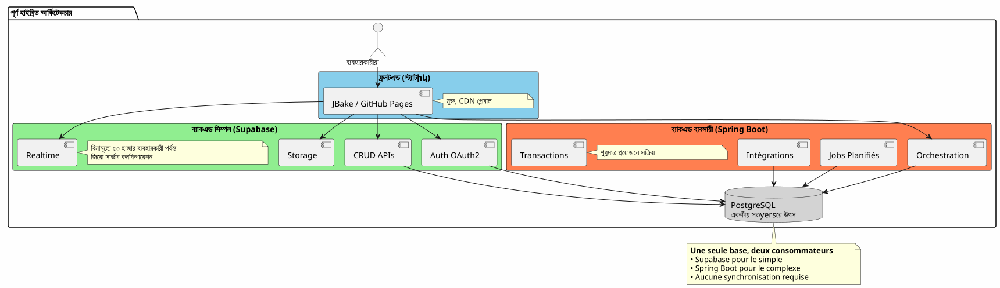
দুই জগতের সেরা
এই আর্কিটেকচার আপনাকে দেয়:
**🚀 सुपरबेज़ेर गति
Oops I used Hindi script accidentally; need Bengali script. Let’s correct:
Bengali: "সুপাবেজের গতি". With emoji:
🚀 সুপাবেজের গতি
Yes.
Check any stray spaces: Should be exactly "🚀 সুপাবেজের গতি". No period unless original had none. Good.
</think>
🚀 সুপাবেজের গতি**
-
ঘন্টায় শুরু, সপ্তাহে না
-
একাধিক ক্লিকে OAuth2 প্রমাণীকরণ
-
স্বয়ংক্রিয়ভাবে তৈরি করা REST API
-
জিরো কনফিগারেশন সার্ভার
স্প্রিং বুটের শক্তি
-
Kotlin এবং Coroutines জন্য শোভন অ্যাসিঙ্ক্রোনাস কোড
-
জটিল ব্যবসায়িক প্রক্রিয়া অর্কেস্ট্রেশন
-
নির্ভরযোগ্য পরিকল্পিত কাজ
-
এসিড গ্যারান্টি করা লেনদেন
-
সম্পূর্ণ স্প্রিং ইকোসিস্টেম
💰 প্রগতিশীল অর্থনীতি
-
0€ ডিমার শুরু করতে এবং যাচাই করতে
-
বৃদ্ধি অনুসরণকারী هزینه
-
বেলা আগে ওভার‑এঞ্জিনিয়ারিং না
স্থাপত্যের নম্রতা
-
ক্রমাগত মাইগ্রেশন, কোনো রি‑ডিজাইন না করে
-
শুধুমাত্র প্রয়োজনে স্প্রিং বুট যোগ করুন
-
সম্পূর্ণ ভেন্ডার লক‑ইন নেই
-
বিকাশযোগ্য আর্কিটেকচার
আগে বাড়তে
প্রযুক্তিগত সম্পদ
Supabase ডকুমেন্টেশন :
স্প্রিং বুট ডকুমেন্টেশন :
সম্পূরক নিবন্ধ :
-
JWT ব্যবহার করে API নিরাপত্তা
-
PostgreSQL এর কর্মক্ষমতা অপ্টিমাইজেশন
-
প্রগ্রেসিভ মাইগ্রেশন প্যাটার্ন
-
বিতৃত স্থাপত্যে ত্রুটি ব্যবস্থাপনা
বাস্তব ব্যবহারের ক্ষেত্রে
এই হাইব্রিড আর্কিটেকচার সফলভাবে ব্যবহার করা হয় :
-
সাস B2BSupabase প্রমাণীকরণ, Spring Boot বিলিং
-
মার্কেটপ্লেসক্যাটালগ Supabase, 트랜잭션 Spring Boot
-
কনটেন্ট প্ল্যাটফর্মSupabase আর্টিকেল, Spring Boot অ্যানালিটিক্স
-
অভ্যন্তরীণ সরঞ্জাম: CRUD Supabase, workflows Spring Boot
স্টার্ট চেকলিস্ট
ফেজ 1 - ভিত্তি (সপ্তাহ ১)
-
Supabase অ্যাকাউন্ট তৈরি করুন - [ ] পোস্টгреসকে কিউএল প্রকল্প কনফিগার করা - [ ] সক্রিয় করুন Auth (Google, GitHub) - [ ] প্রারμβিক স্কিমা সংজ্ঞায়িত - [ ] Row Level Security কনফিগার করুন - [ ] JBake থেকে API টেস্ট করুন
ফেজ 2 - MVP (সপ্তাহ ২-৩)
-
principal পাতাগুলো বাস্তবায়ন করা - [ ] OAuth2 प्रमाणীকরণ একীভূত করুন - [ ] CRUD ফর্ম তৈরি করুন - [ ] ফাইল জন্য স্টোরেজ কনফিগার করুন - [ ] GitHub Pages-এ স্থাপন করুন - [ ] বাস্তব পরিস্থিতিতে পরীক্ষা করুন
ফেজ 3 - উন্নতি (প্রয়োজারের অনুসারে)
-
জটিল যুক্তির প্রয়োজন চিহ্নিত করুন - [ ] প্রয়োজন হলে Spring Boot প্রকল্প তৈরি করুন - [ ] Supabase‑এ JWT যাচাইকরণ কনফিগার করুন - [ ] PostgreSQL Supabase-এ সংযুক্ত করুন - [ ] জটিল বৈশিষ্ট্য স্থানান্তর - [ ] পরিকল্পিত কাজ বাস্তবায়ন করা - [ ] স্প্রিং বুট স্থাপন করুন (ক্লাউড রান, ইত্যাদি)
Anti-Patterns পরিহার করুন
❌ করবেন না :
-
Supabase এবং Spring Boot-এ ডেটা ডুপ্লিকেট করুন
-
দুটি পৃথক PostgreSQL ডেটাবেস তৈরি করুন
-
আপনি নিজে প্রমাণীকরণ কোড করুন
-
সহজ CRUD কাজে Spring Boot ব্যবহার করুন
-
প্রারম্ভিক চরণ থেকে অতিরিক্ট আর্কিটেকচারিং করা
-
Supabase Row Level Security-কে উপেক্ষা করুন
✅ Viklophe korun :
-
একটি একক PostgreSQL ডেটাবেস শেয়ার করুন
-
Supabase-কে প্রমাণীকরণ পরিচালনা করতে দিন
-
স্প্রিং বুটকে শুধুমাত্র জটিলতার জন্য ব্যবহার করুন
-
সহজে শুরু করুন, ধীরে ধীরে উন্নত Hasan।
-
প্রต่েক প্রযুক্তির দৃঢ় বিন্দু উপযোগ করুন
-
RLS ব্যবহার করে ডেটাবেজ স্তরে সুরক্ষিত করুন
উন্নয়নের দৃষ্টিভঙ্গি
নতুন ক্ষমতাগোলের যোগ
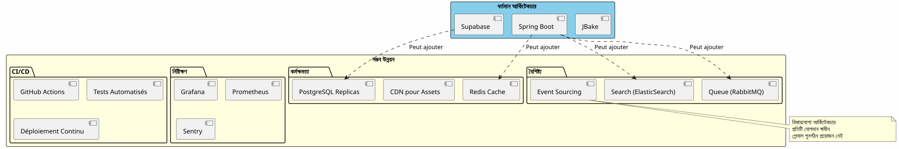
অনুভৃতিক স্কেলিং
আপনার অ্যাপ্লিকেশন বর্ধিত হলে, হাইব্রিড আর্কিটেকচার স্বাভাবিকভাবে স্কেল হয় :
সুপাবেস :
-
স্বয়ংক্রিয়ভাবে মিলিয়নগুলো অপারেশনে স্কেল করা হয়
-
পাঠক প্রতিলিপি পাঠের পেরফরম্যান্সের জন্য
-
নিরাপত্তার জন্য পয়েন্ট‑ইন‑টাইম পুনরুদ্ধার
স্প্রিং বুট :
-
বহুতগুলো ইন্সট্যান্স লোড ব্যালান্সারের পिछে
-
স্ট্যাটলেস ডিজাইন অনুভ্রী স্কেলিং সহজ করে
-
প্রয়োজন হলে orchestraion-এর জন্য কুবারনেটিস ব্যবহার করুন
PostgreSQL :
-
বড় টেবিলগুলির জন্য পার্টিশনিং
-
সংযোগ সমাহার (PgBouncer)
-
শার্ডিং খুবই প্রয়োজনীয় (দুর্ভব)
আর্কিটেকচারাল সাক্ষ্য
স্টারট‑আপ SaaS (৫০ হাজার ব্যবহারকারী)
(blank)
</think>
(blank) আমরা ১০০% সুপাবেস দিয়ে শুরুしていたাম। ৫ হাজার ব্যবহারকারীতে, আমরা শুধুমাত্র স্ট্রাইপ বিলিং এবং মাসিক রিপোর্টের জন্য স্প্রিং বুট যোগ করেছি। এক বছর পর, আমাদের অপেশারের ৮০% এখনও সুপাবেস দিয়ে চলছে। স্প্রিং বুট শুধুমাত্র গুরুত্বপূর্ণ অংশটি পরিচালনা করে। এই ভাগ‑বিভাজন আমাদেরকে ডিজাইন পরিবর্তন না করেই স্কেল করতে দেয়। __
ই-লার্নিং প্ল্যাটফর্ম (১০,০০₀₀ ব্যবহারকারী)
_ Supabase-এর OAuth2 প্রমাণীকরণ আমাদেরকে ৩ সপ্তাহের উন্নয়ন সময় বাঁচিয়েছে। স্বয়ংক্রিয়ভাবে উৎপন্ন API সমस्त আমাদের কোর্স ক্যাটালগ পরিচালনা করে। Spring Boot শুধুমাত্র PDF সার্টিফিকেট এবং অগ্রগতি ইমেলদের জন্য ব্যবহৃত হয়। সহজ, রক্ষণযোগ্য ও স্কেলযোগ্য আর্কিটেকচার। _
Marketplace B2B (3k ব্যবহারকারী)
সংক্ষিপ্তসার : একটি আধুনিক স্থাপত্য প্রেক্ষাপট
সুপাবেজ + স্প্রিং বুট হাইব্রিড আর্কিটেকচার একটি নতুন প্রতিমান উপস্থাপন করে :স্থপত্য বিশেষীকরণ.
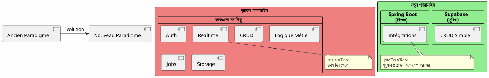
মৌলিক নীতিঃযা ইতিমধ্যে পরিষেবার রূপে বিদ্যমান তা তৈরি করবেন না—আপনার অ্যাপ্লিকেশনকে আলাদা করে তোলে যে বৈশিষ্ট্যগুলো থাকবে উপর মনোযোগ দিন।
৮০/২০ নিয়ম
অਧিকাংশ অ্যাপ্লিকেশনে :
-
৮০% অপারেশনসেগুলো স্ট্যান্ডার্ড CRUD → Supabase
-
পরিচালনaders ২০%ব্যাবসায়ীিক লজিক প্রয়োজন → Spring Boot
এই স্বাভাবিক নিয়ম মিশ্রিত আর্কিটেকচারকে যুক্তি দেয়।
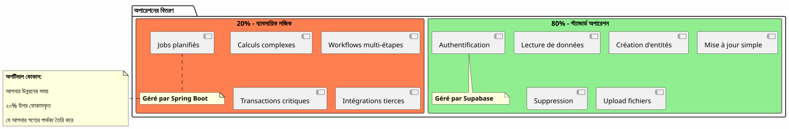
শেষ নিষ্কর্ষ
হাইব্রিড আর্কিটেকচারটি কোনো প্রযুক্তিগত সমযণ নয়, এটি sebuahরণনৈতিক সিদ্ধান্ত.
এটি আপনাকে অনুমতি দেয়:
-
✅ দ্রুত একটি কার্যকর MVP দিয়ে শুরু করুন
-
✅ আপনার বাজারটি ভারী বিনিয়োগ ছাড়া যাচাই করুন
-
জটিলতা প্রয়োজন হলে ধীরে ধীরে বিকাশ করুন
-
প্রতিটি পর্যায়ে আপনার খরচ নিয়ন্ত্রণ করুন
-
প্রতিটি প্রযুক্তির সেরা অংশ ব্যবহার করুন
-
✅ প্রাক্তর অতিরিক্ত ইঞ্জিনিয়ারিং এড়িয়ে চলুন
-
✅ ভবিষ্যৎের জন্য নমনীয়তা বজায় রাখা
এটি ಪ್ರತিনিধিত্ব করে :
-
🎯প্রাগ্ম্যাটিজমযেকোনো প্রযুক্তি যেখানে সে দক্ষ
-
🚀বেগ: Time-to-market ন্যূনতম
-
💰অর্থনীতিমূল্যের সাথে সামঞ্জস্যপূর্ণ খরচ
-
🔮বিকাশশীলতাআপনার সাথে বাড়ছে আর্কিটেকচার
-
🛡️বলদারতাপরীক্ষিত ও विश्वস্ত سERVICE? Wait must be correct characters. Should not have stray Arabic letters. Actually typed incorrectly due to mixing languages. Must produce Bengali script only.
Let’s rewrite correctly: পরীক্ষিত ও বিশ্বস্ত সেবা
Yes. That is final. Ensure no extra spaces before/after. Output directly.
</think>
পরীক্ষিত ও বিশ্বস্ত সেবা
আপনার পরবর্তী পদক্ষেপ
যদি এই আর্কিটেকচার আপনাকে বুঝায়, এখান থেকে শুরু করুন :
-
একটি সুপাবেস অ্যাকাউন্ট তৈরি করুন(নিশূল্ক)
-
আপনার সর্বনিম্ন ডেটা স্কিমা সংজ্ঞায়িত করুন
-
OAuth2 প্রমাণীকরণ কনফিগার করুন
-
আপনার প্রথম JBake পৃষ্ঠা তৈরি করুন যা API ব্যবহার করে
-
GitHub Pages-এ স্থাপন করুন
আপনি থাকবেন একটি কার্যকর MVPকয়েক দিন.
Spring Boot സ്വাভাবিকভাবে তখন আসবে যখন আপনার প্রয়োজন হবে। আগে নয়।
হাইব্রিড ஆর্কিটেকচার হলো ঠিকভাবে যে jobs lAgeBE, ঠিক সময়ে নির্মাণ করার শিল্প।
শুভ উন্নয়ন ! 🚀
এই নিবন্ধটি শেয়ার করুন যদি আপনি মনে করেন যে এটি অন্যান্য ডেভেলপারদের ভাল আর্কিটেকচারসিদ্ধান্ত নেওয়ার সাহায্য করতে পারে।